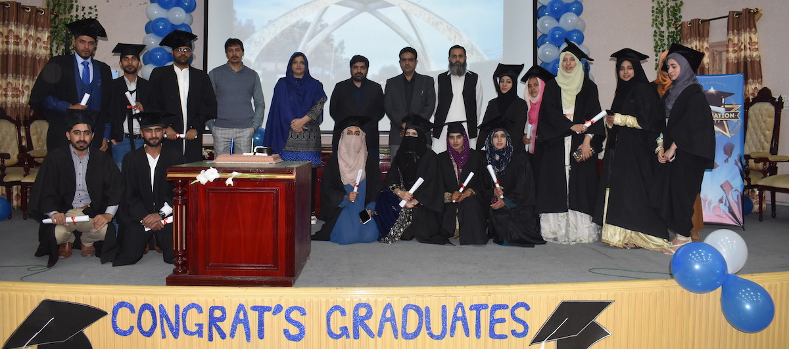
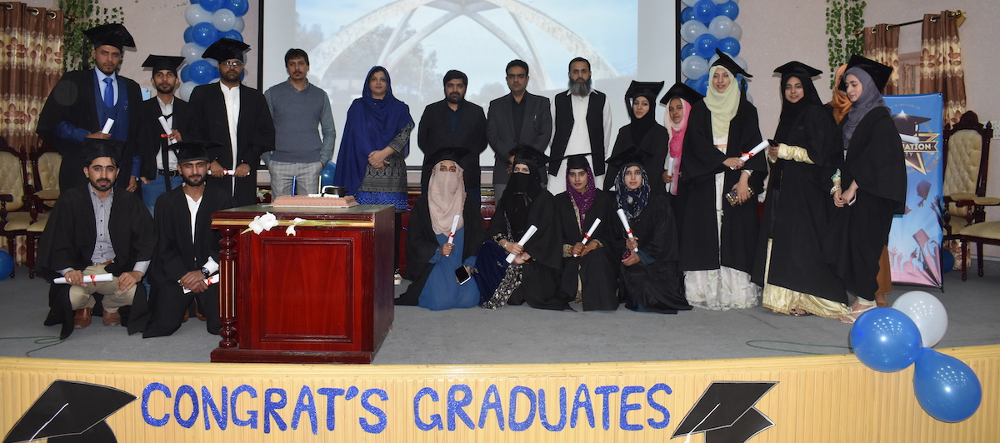
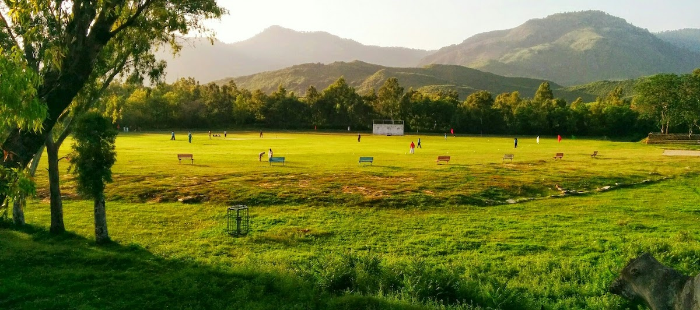
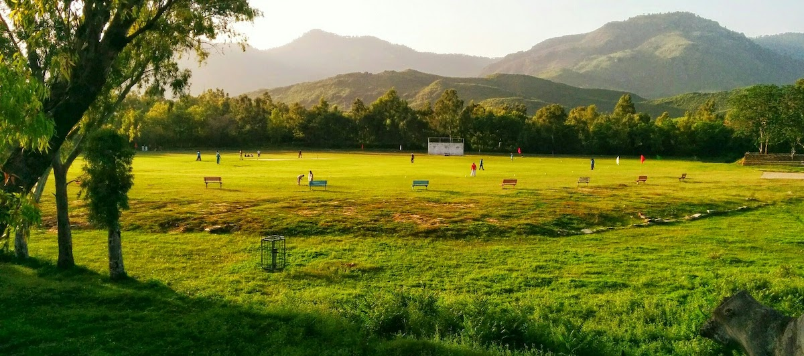

Department of Computer Science
Quaid-i-Azam University
Islamabad.
Introduction
The Department of Computer Sciences at Quaid-i-Azam University is considered as one of the best computer science departments in Pakistan. The department is ranked among the top 3 departments in the country as per QS and Times Higher Education (THE) rankings. It was established at Quaid-i-Azam University Islamabad in 1976. The main objective of the department is to produce Computer Scientists in order to meet the growing demand for computer professionals in the country. All the programs have been highly successful. Department graduates have attained higher degrees from developed countries and are working in national and international organizations. The department offers PhD (Computer Science), MPhil (Computer Science), MS (Information Science & Technology), MS (Data Science), and BS (Computer Science) degrees. Each degree program has a specific objective and focus. The course of study and syllabus for each degree is updated and is inline with its objectives.


 



 



Research


Human Information Interaction
Investigates all aspects of information usage by humans. Research focus varies for information seeking behavior, Information Interaction Techniques, Storage and Retrieval models/frameworks for structured and unstructured information, and information services for human information needs,

Knowledge Engineering
Focuses on analyze of data, metadata and knowledge using supervised and unsupervised mining algorithms. The target areas will be software architecture, web services and overlay networks. The main goal is to process related and uncorrelated facts and extract meaningful contextual knowledge for quality decision making.

Networking and Communication
This group investigates the applied aspects in the domains of networking, communication, security and privacy. The research group focuses on a number of areas including but not limited to computer networks, distributed systems, mobile Agent-based distributed systems, routing protocols, peer-to-peer computing, security and privacy.
Latest News & Important Documents
News
- Quaid-i-Azam University in "Computer Science and Information Systems" ranked 301-350 worldwide and third nationally by QS Rankings 2025
- Seminar on Entrepreneurial and Growth Dynamics in the Tech Landscape by Usman Asif, CEO, DevSinc
- CS Alumni Annual Event 2024 was held on Feb 25, 2024 in Islamabad Club
- QAU Orientation Booklet 2023-2024 has been published
- Students from CS Dept got first positions in On Spot Programming and Hackathon competitions in the 8th ExcITe Cup organized by CUST, Islamabad

Department of Computer Sciences
Quaid-i-Azam University, Islamabad, 45320, Pakistan
Contact Information
Tel : +92 (051) 9064-2057